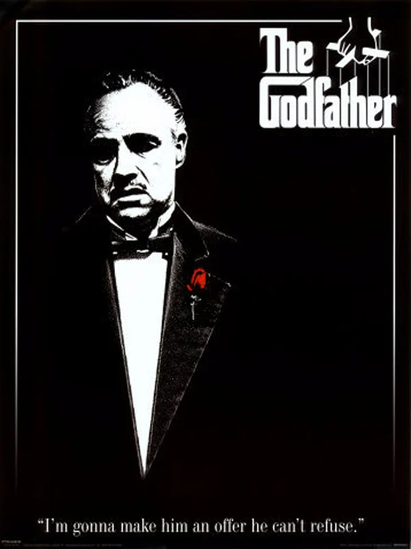

|

|
|
Mafya Babası veya Baba, Mario Puzo'nun yazdığı aynı adlı romandan uyarlanan,
Francis Ford Coppola'nın yönettiği, Marlon Brando ve Al Pacino'nun başrollerini paylaştığı filmdir.
Filmde ayrıca yardımcı rollerde James Caan, Robert Duvall, Diane Keaton, John Cazale vardır.
|